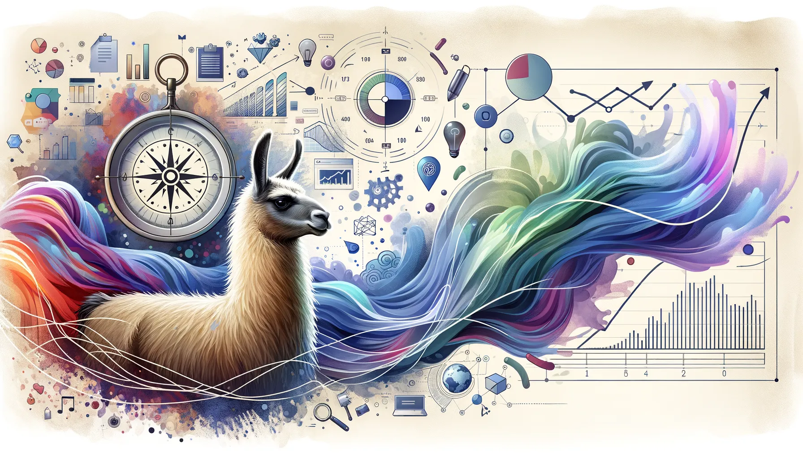
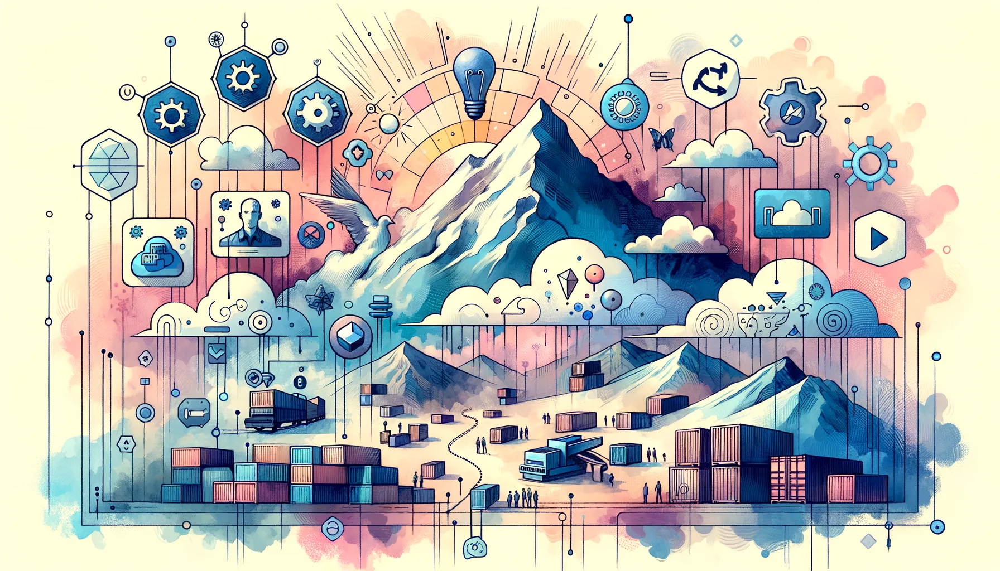

Eric J Ma's Website
written by Eric J. Ma on 2025-01-04 | tags: llms automation workflows tools agents
In this blog post, I explore what defines an LLM agent, highlighting its goal-oriented non-determinism, decision-making flow control, and natural language interfaces. I also discuss when to use agents, emphasizing the importance of variable scope inputs and constrained actions. By examining industry perspectives from Anthropic and Google, I also explore how agents can effectively handle diverse inputs while maintaining defined action boundaries. Real-world examples, like a bill calculation bot and a literature research assistant, illustrate these principles. How can these insights transform your approach to designing agent applications?
Read on... (1964 words, approximately 10 minutes reading time)written by Eric J. Ma on 2024-12-31 | tags: blogging consistency ai content llms data biotech career writing discovery
In this blog post, I reflect on my year-long challenge of writing a blog post every week, surpassing my goal with 53 posts. This journey taught me the power of consistency, improved my ability to communicate complex ideas, and helped me develop AI-assisted tools to streamline my workflow. I also explored the intersection of life sciences and computation, aiming to accelerate scientific discovery. How did these experiences shape my approach to integrating AI into creative processes and what insights can you gain from my journey?
Read on... (5340 words, approximately 27 minutes reading time)written by Eric J. Ma on 2024-12-20 | tags: docling nougat llms document parsing gpu
In this blog post, I explore the challenges of extracting structured text from PDFs, especially when dealing with equations, tables, and figures. I discuss two tools, Nougat-OCR by Facebook Research and Docling by IBM, which I found effective for this task. Nougat-OCR excels at handling equations and tables, while Docling excels on extracting figures. By combining these tools, we can develop a workflow that captures all critical components of a PDF. Want to know how to retain valuable knowledge from complex PDFs?
Read on... (3400 words, approximately 18 minutes reading time)written by Eric J. Ma on 2024-12-17 | tags: professional growth leadership relationships networking organizational change professional development
In this blog post, I explore how to navigate and thrive during organizational changes. I share personal insights and practical strategies, such as focusing on meaningful relationships with colleagues, consistently delivering great work, and proactively building your career path. I also emphasize the importance of staying present and cultivating a 'career committee' of trusted advisors. Change is inevitable in any organization, but how we respond can transform these shifts into growth opportunities. Curious about how to build your own resilience in changing times?
Read on... (633 words, approximately 4 minutes reading time)written by Eric J. Ma on 2024-12-16 | tags: retrieval augmented generation keyword search fuzzy search vector search knowledge graph large language models
In this blog post, I provide an overview of retrieval methods for Retrieval-Augmented Generation (RAG), exploring various methods like human-curated, exact keyword search, fuzzy keyword search, vector similarity search, and knowledge graph-based retrieval. Each method is dissected to reveal its unique strengths and ideal use cases, providing insights into how they can enhance RAG systems' performance. Curious about how these strategies can be combined for even more robust results?
Read on... (1562 words, approximately 8 minutes reading time)written by Eric J. Ma on 2024-12-15 | tags: agents llamabot automation interface python analysis workflow
In this blog post, I explore the innovative features of LlamaBot's new AgentBot, designed to simplify complex task automation. These agents operate with goal-oriented non-determinism, decision-making flow control, and natural language interfaces, making them powerful yet user-friendly. I also provide real-world examples, including a detailed walkthrough of a stock market analysis. Curious about how these agents can streamline your workflows and enhance the flexibility of your LLM applications?
Read on... (1361 words, approximately 7 minutes reading time)written by Eric J. Ma on 2024-11-22 | tags: strategy cloud adoption data catalog data discovery data scientist biotech data governance social graph
Building data platforms at biotechs often fails because we ask scientists to change their workflow and manually catalog data. This leads to poor adoption, wasted engineering effort, and continued data accessibility problems. Instead of building new systems, I propose automatically capturing data sharing patterns that already exist. This approach: - Reduces implementation costs by 60-80% compared to traditional platforms - Requires zero change in scientist behavior - Creates an automatically-maintained data catalog - Enables rapid data discovery through social connections - Can be implemented incrementally, showing value within 3-6 months
Read on... (2527 words, approximately 13 minutes reading time)written by Eric J. Ma on 2024-11-14 | tags: modal deployment open source api cloud gpu software models ollama large language models
In this blog post, I share my journey of deploying Ollama to Modal, enhancing my understanding of Modal's capabilities. I detail the script used, the setup of the Modal app, and the deployment process, which includes ensuring the Ollama service is ready and operational. I also implement an OpenAI-compatible endpoint that makes it easy to use the deployment with existing tools and libraries. This exploration not only expanded my technical skills but also created a practical solution for using open-source models in production. Curious about how this deployment could streamline your projects?
Read on... (1560 words, approximately 8 minutes reading time)written by Eric J. Ma on 2024-11-08 | tags: python tooling data science notebook reproducibility juv uv environment management scripts analysis
In this blog post, I explore the innovative 'juv' package, which simplifies Python environment management for Jupyter notebooks by embedding dependencies directly within the notebook file. This approach eliminates the need for separate environment files, making notebooks easily shareable and reducing setup complexity. I also discuss integrating 'juv' with 'pyds-cli' to streamline ad-hoc data analyses within organizations, enhancing reproducibility and reducing environment conflicts. Curious about how this could change your data science workflow?
Read on... (1381 words, approximately 7 minutes reading time)written by Eric J. Ma on 2024-11-02 | tags: llamabot logging software development llm large language models web development version control
In this blog post, I share the latest updates to LlamaBot, including automatic logging of LLM interactions, version-controlled prompt logging, and a new web-based UI for visualizing these logs. These features enhance prompt analysis and make prompt engineering more intuitive and data-driven. Additionally, logs can now be exported in OpenAI fine-tuning format for easier sharing and integration. If you're keen on refining your LLM interactions and prompt crafting, these tools might be just what you need. Curious to see how these new features can streamline your workflow?
Read on... (613 words, approximately 4 minutes reading time)